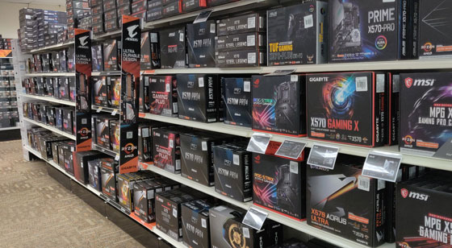

Our building program allows for our customers to choose whether they need help from our experts picking parts, comparing specs, or even help building a Pc.

Experts can help show you the parts within the budget and allow for the best Pc for you. Our building program teaches our customers how to properly build Pc's and the intricate art of water cooling systems.
Our experts have open ended Pc's to allow for customers to see inside them and explain how the parts fit together and which parts can help boost your game.
Some options that customers can buy are pre-built Pc's on the shelf, or have some of our tech's build a Pc with the specs you choose in house.